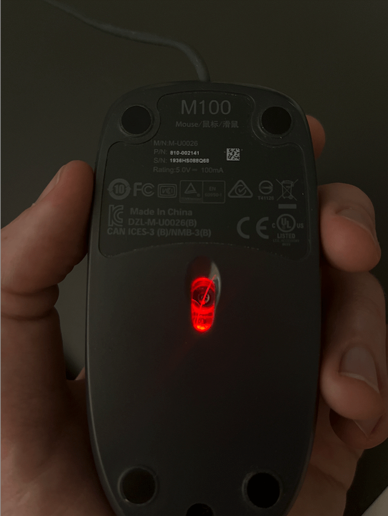

The dog hair and the computer mouse
Apr 13, 2023 · 679 words · 4 minutes read
Because I spend my entire workday on the computer, my mouse is very important to me. With my basic optical mouse, I’m far from a connoisseur, but there are a few things that I’m just so used to that I notice any changes immediately. For example, it’s easy for me to notice changes to my mouse acceleration, and even the slightest change in acceleration throws me off. I notice it so much that I have a program on my laptop to disable any mouse acceleration — even the default lowest value isn’t good enough for me.
I’m also very, very far from a hardware expert. My physical object debugging skills include unplugging and plugging it back in, turning it off and back on, and then trying it with different hardware if possible. This is usually enough to solve 99% of the problems I encounter, but I do fear that other 1%.
So you can imagine my dismay when one day, my computer mouse stopped working.
It had been working fine all morning. I had clicked, scrolled, panned, dragged, and opened in a new tab all day without any issue. All of a sudden, it was jittery. The cursor would jump weirdly, sometimes respecting my movements, but sometimes jumping across the screen at random.
I went through the usual steps. Unplug, plug back in. Unplug from USB hub and plug directly in. Switch out the USB-A to USB-C adaptor. Try a different USB port. Quit the mouse acceleration program, just in case, then restart it. Check to make sure I don’t have the mouse on a reflective surface. Try to make do for a bit without the mouse, but then struggle when trying to effectively tab through a new Google search page. Restart the computer, just in case.
After a few unsuccessful minutes of this, I happened to look at the bottom of my mouse.

There was a small dog hair1 stuck in the little laser area. Optical mice work by shining a light on the surface below and using a sensor to compare how the pattern it sees changes from one instant to another. If the small pattern on your mouse pad has moved a millimeter, it’s likely that the mouse has moved a millimeter, and it can send that signal. But, if there’s a dog hair in the way, there may be some wildly different patterns as the hair is dragged across the front of the sensor. You may just end up with weird, jittery motion.
I removed the hair, and the mouse worked fine.
Facing little problems you’ve seen before
This has since happened a few times, and every time, I’ve (usually correctly) checked for dog hair first. It’s top of mind, and it’s now my first go-to thing when checking2.
The other day at work, when walking a new team member through some of our systems, I found myself using the metaphor of “scar tissue” for little problems you’ve seen and built up experience with. I think about this a lot when working with software, as we see similar instances of small problems we’ve seen before. As you learn from seeing something weird, from making a mistake, or from spending time debugging, you slowly build this arsenal of problems you’ve seen before. Most of them are really just nameless echoes of time you’ve spent digging into hairy bugs or things that have burned you in the past.
“Ah, a 502? That probably means something related to security groups when talking to the upstream service, and I’d check there first.”
“For that new feature, it’ll be helpful to add metrics and logging _before_ you may need them.”
“The text fits in the div when it’s in English, but have you tried when the page is in German?”
If you ask me how I know these things, it’s because I’ve already found a hundred dog hairs in a hundred different mice. I’ll probably find hundreds more.
-
I also furminator my dog quite a bit, but to no avail. He is a scruffy, grumpy, hair-creating machine. ↩︎
{kind=link}